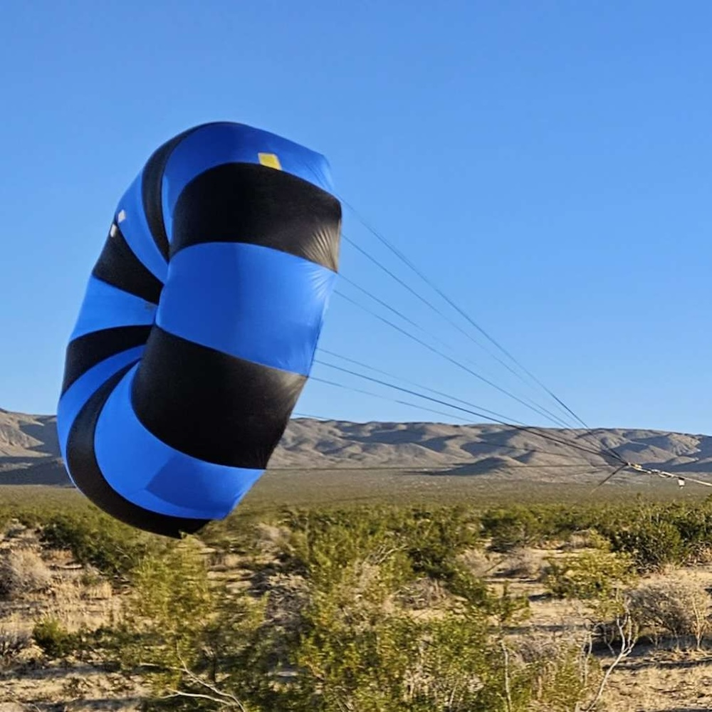

Airframe
Lead: Zaafir Hasan
Responsible for designing, constructing, and optimizing the structural components of a rocket, including the body and fins. They focus on ensuring the airframe's stability, aerodynamics, and structural integrity to withstand the forces encountered during launch and flight. This team collaborates closely with all subteams to ensure the development of a functioning vehicle.
Recovery
Lead: Salvador Bravo
Responsible for developing and implementing the mechanisms that ensure the safe return of the rocket to the ground after its flight. This includes the design and deployment of recovery systems such as parachutes. The team carefully considers factors like altitude, descent rate, and wind conditions to optimize the recovery process. Collaborating closely with other teams, particularly avionics for accurate timing and deployment control, the recovery team plays a vital role in safeguarding the rocket and its payload during descent.


Avionics
Lead: Dulanya Cooray
Responsible for developing and implementing the electronic systems that control and monitor the rocket's flight. This includes designing and integrating components such as sensors, microcontrollers, and communication systems. The avionics team plays a crucial role in ensuring accurate data collection, precise trajectory control, and successful deployment of recovery systems for the rocket. They often collaborate with other teams, such as airframe and propulsion, to achieve seamless integration of their electronic.
Propulsion
Lead: Eduardo Godinez Diaz
Responsible for designing, building, and testing the rocket's propulsion system, typically involving the rocket engine and associated components. In our team, they are responsible for the development of the liquid engine which is featured in our liquid series vehicles. The propulsion team collaborates with other teams, such as avionics and airframe, to integrate the engine seamlessly into the overall rocket design, enabling a successful launch and controlled flight. Testing and optimization of the propulsion system's performance are critical aspects of their responsibilities.

Payload
Lead: Tristan Steen
Responsible for designing, building, and integrating the scientific or experimental equipment that the rocket will carry during its flight. This team works to ensure that the payload is securely housed within the rocket, meets any mission-specific requirements, and can withstand the conditions experienced during launch and ascent. Collaboration with other teams, particularly avionics for data collection and integration, is essential to achieve a successful and coordinated mission.
System
Lead: Jonah Henry
Responsible for the overall integration and coordination of various subsystems within the rocket project. This involves ensuring seamless communication and functionality among components such as airframe, avionics, propulsion, payload, and recovery systems. The systems team plays a critical role in overseeing the integration of these subsystems to guarantee the rocket's overall success and mission objectives. They often work closely with other specialized teams, facilitating collaboration and troubleshooting any interdisciplinary challenges that may arise during the development and testing phases of the rocket.

Simulations
Lead: Sudhanva Kulkarni
Responsible for creating the foundation for simulation standards and methods used across the team. Members of this team mainly work as consultants to other technical subteams to help and guide them to their simulations related needs and goals. Members of this team may also choose to work on more experimental, detailed simulations projects that can create simulations frameworks for the future.